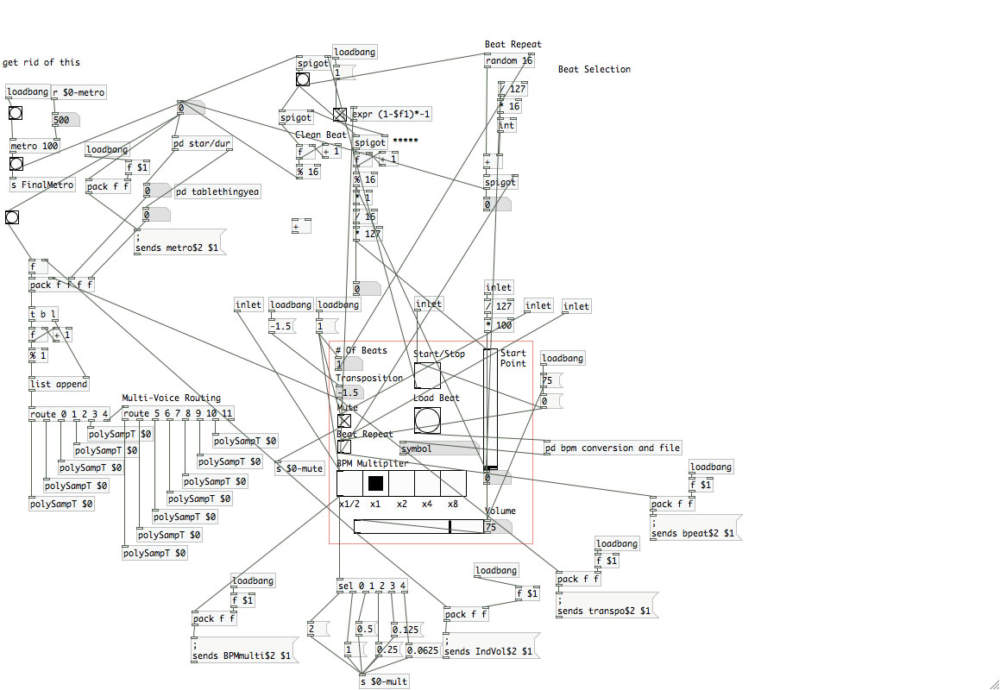
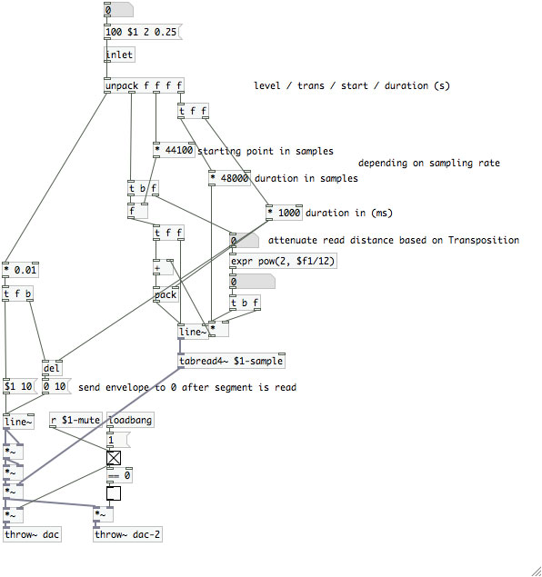
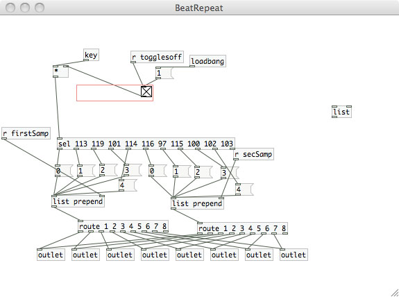
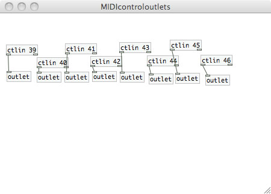
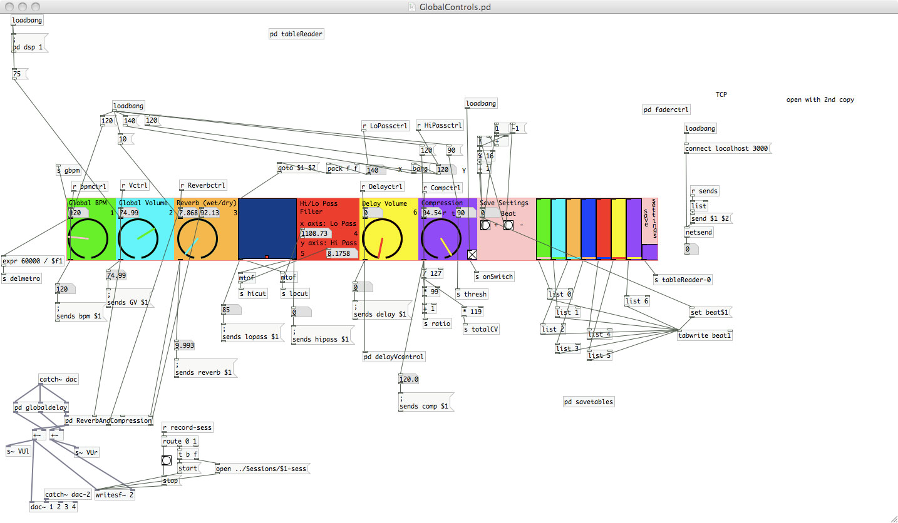
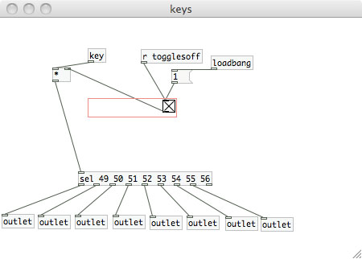

Beat Machine
Randomizing 4 bars of music 1 beat at a time
Taking a short hook and creating derivations of it to compose interesting music has been a fundamental part of composition for a long time (i.e. centuries). Now, with the advent of pop music, listeners value hooks more than ever. I had the idea to take these short, often 4 measure hooks and provide a way to mix them together, vary them and create something else entirely with them.
That's where Beat Machine comes in.
Beat Machine, at its core, takes a 4 measure sample (preferably of something catchy), and has the ability to play it faster, slower, pitched, with added effects, and all sorts of good stuff. Then, you mix it with catchy phrases of different songs, providing a truly unique experience. The most useful tool that Beat Machine gives you is the ability to randomize each quarter note beat of the song. You can randomize any number of these quarter notes, 1 to 16, at any given time (with 1 just providing a simple "beat repeat" function found in most samplers).
Convenient interactive GUI elements were implemented to allow users to manipulate real-time global and local parameters. Keyboard input also eases the process of mixing together the tracks, as well as data for the M-Audio axiom keyboard (explanation for how to use this is included in the patch).
Example mix:
Notice that Beat Machine is great for creating textural as well as rhythmic oriented music, highlighting its versatility. Feel free to download Beat Machine here.
All the instructions on how to work it can be found in the helpful ReadMe file in the patch, but you'll need to download Pd-extended before opening the patch. I've also included a collection of pre-cut, 4-bar samples for use with the mixer, but any song that is in a 4/4 meter can serve as source material for Beat Machine. I have also implemented a "Record Session" function in the patch, allowing for quick placement of stereo files of your mixes to be placed in a folder in the same directory as Beat Machine.
Screenshots:
Control Patch
Sample Voice
Beat Repeat Key Sends
MIDI In
Effects Patch
More Key Sends